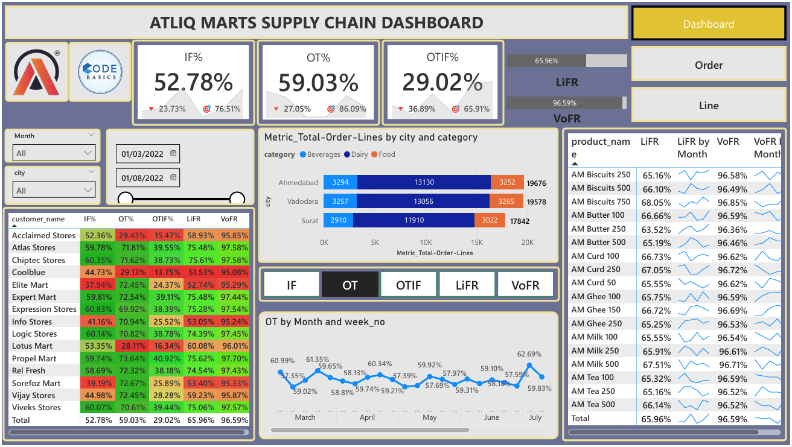
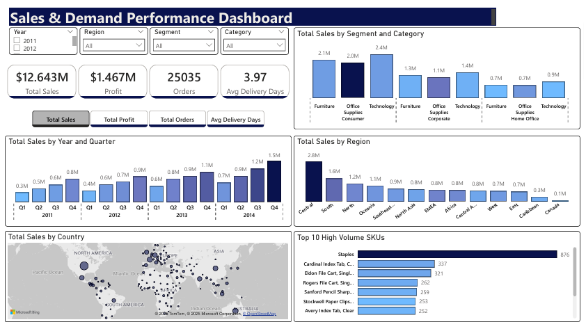

ATLIQ Marts Supply Chain Dashbooard
An end-to-end supply chain dashboard built using AtliQ Mart’s performance data. The project was inspired by a real-world FMCG challenge to help improve service levels and guide strategic expansion decisions across Indian metro and tier-1 cities.
- Daily service level tracking: OT%, IF%, OTIF%
- Gap analysis vs. customer/city-specific targets
- LiFR & VoFR metrics to identify order fulfillment issues
- Customer, product, and city-level breakdowns
- Actionable insights to improve CPFR outcomes and service reliability
Tools: Power BI, DAX | Focus: CPFR, Service Level Optimization
Global Superstore Demand Planning Dashboard
An interactive dashboard built using the Global Superstore dataset (2011–2014) to support demand planning decisions. It highlights sales, profit, and order trends across time, regions, segments, and product categories.
- Dynamic KPIs (Sales, Profit, Orders)
- Regional & segment-level performance
- Top 10 high-volume SKUs
- Executive-ready insights & recommendations
- Built to showcase data storytelling and supply chain strategy skills.
Tools: Power BI, Excel, DAX | Focus: Supply Chain Analytics
Uber Trips Analysis
Dashboard built on NYC Uber data to simulate demand planning and urban mobility optimization.
- Filters by borough, base, hour
- Heatmaps for peak demand areas
- Insights: Friday peaks, Manhattan dominance, weekend trends
Tools: Power BI, DAX, Power Query
Inventory Analysis

Modeled attrition patterns by department and tenure. Highlighted key retention gaps using clustering.
Tools: Power BI, DAX, Clustering
Procurement Spend Tracker
Analyzed vendor spend, payment cycles, and contract leakage across categories. Executive-friendly view.
Tools: Power BI, SQL, Power Query
Production vs Forecast
Visualized forecast bias and service level attainment to support planning accuracy initiatives.
Tools: Power BI, Excel, Forecast Accuracy